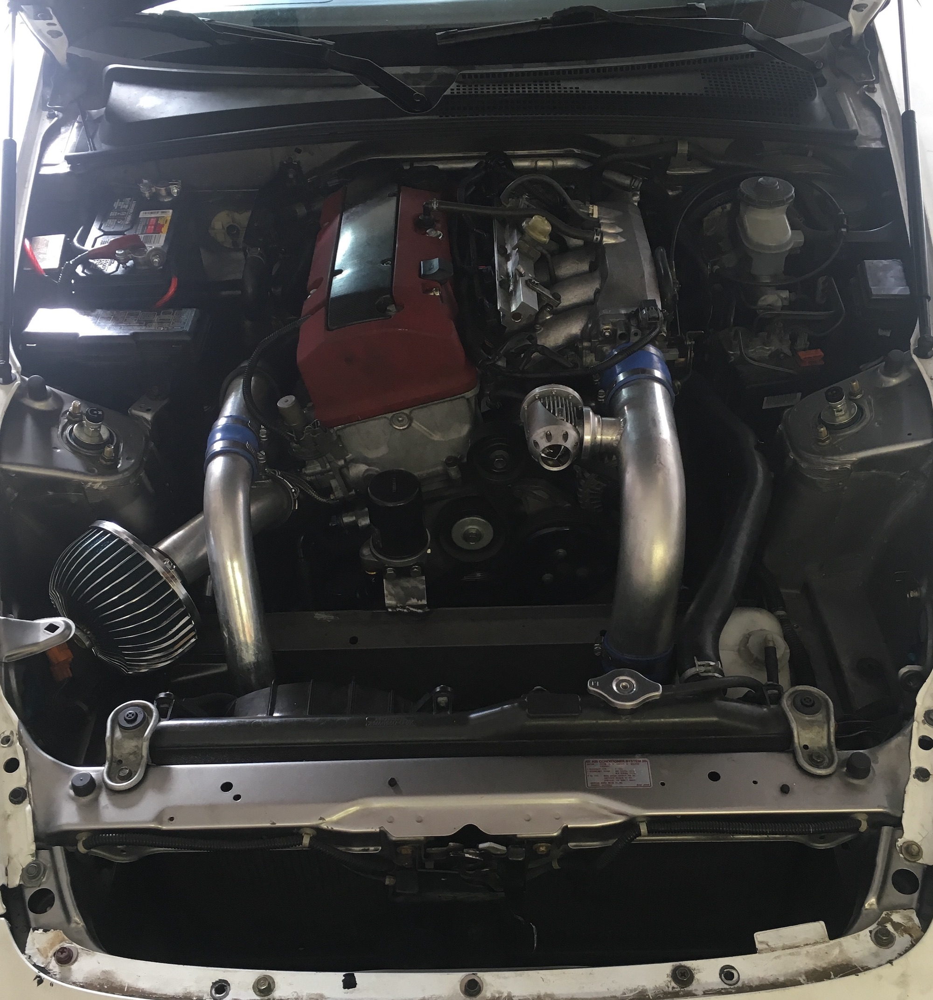
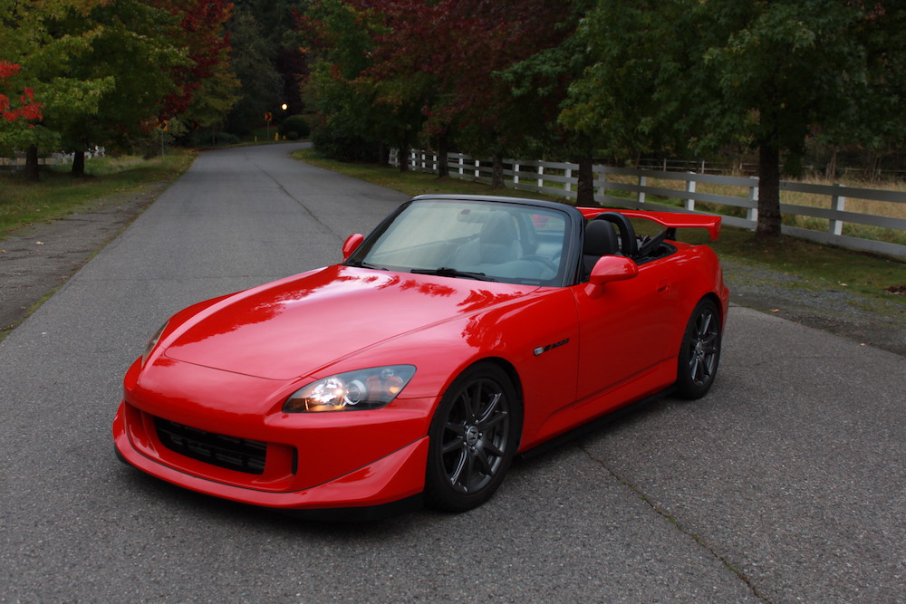

(but also, the most rewarding).
I purchased this Honda S2000 in April of 2016. This is it on Day 1, sitting in my driveway, showing just the cosmetic work it needed done.
Engine? We went through two of them. Transmission? Clutch? Differential? Check, check, check.
This 6-month project truly tested my mechanical capabilities, and allowed me to learn how every system in this vehicle was engineered through firsthand experience.
I can confidently say that every single nut and bolt in this car was removed and replaced.
The car did not run when I bought it. Instead of assuming that the engine was totally locked, we figured that we could spend a few hours diagnosing electrical problems that may prevent the engine from turning over, hoping to save myself all the labor and money to replace it.
Nope. Engine was toast.
While I waited for second-hand engines to be posted in local classifieds, I sourced the remaining body panels needed. It’s a Frankenstein S2000, but at least it’s complete.
After 3 weeks of searching, I found a low-mileage F20c (engine code for the S2000) down in Portland, OR. We made the trip over the weekend and brought it home ready-to-install.
While the entire drivetrain was outside of the car, I decided now was a better time than ever to go forced induction.
We pieced together a complete power package, including an Hondata FlashPro engine management computer and custom Turbonetics turbo kit.
With all the extra power going to the wheels, we needed to make sure the clutch could actually hold it, so upgrade the clutch we did. In the meantime, we welded a new exhaust system and fit new oil lines.
After months of sitting up waiting for parts to arrive and all systems diagnosed, the S2000 was finally ready to have everything installed.
With four guys working around the clock for 15-hour straight, we managed to:
We were pretty proud. Watching the sun set and rise from the inside of a garage is something we’ve done far too many times.

With the hardest part out of the way, all the electrical, mechanical, and forced induction pieces complete and functional, it was time to tackle the awful interior.
A cherry-red interior that definitely did not age well, ripped seats, all sorts of grime and weird smells throughout the cabin. All of it needed to go.
At this point, we’re 5 months into this project, with thousands of hours (and dollars) invested, and it still looks like Frankenstein. After I sourced a few extra aftermarket body panels and interior bits, the S2000 was ready to finally get its much-deserved facelift with some paint and body work.

Fresh R-510 New Formula Red paint, complete black leather interior, Momo Drift steering wheel, and a crazy powerful drivetrain under the hood.